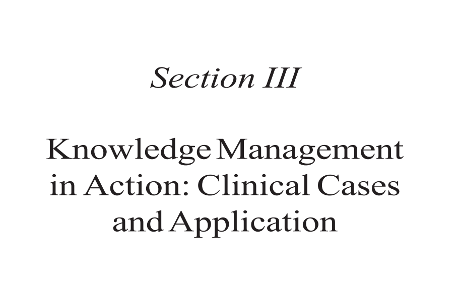
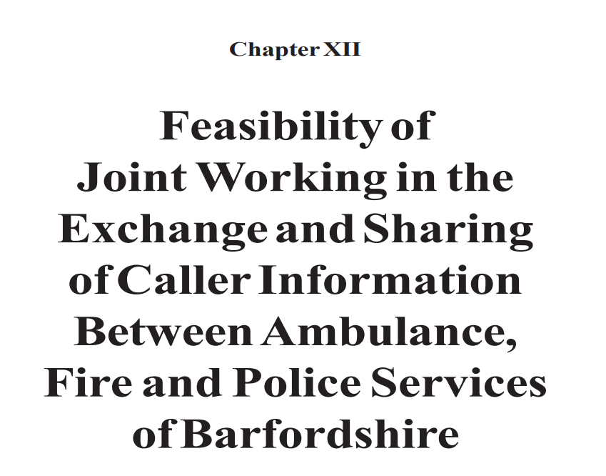

216-220
Raghavan
Ludley, R.S. & Lusted, L.B. (1959). Reasoning foundations of medical diagnosis.
Science.
MedExpert-Cadiag (2004). MedExpert WWW - A medical knowledge base server - HELP.
Retrieved March 31 2004, from http://medexpert.imc.akh-wien.ac.at/
cadiag_info.html
MedExpert-DxPlain (2004). MedExpert WWW - A medical knowledge base server - HELP.
Retrieved March 31 2004, from http://medexpert.imc.akh-wien.ac.at/
dxplain_info.html
MedExpert-HELP (2004). MedExpert WWW - A medical knowledge base server - HELP.
Retrieved March 31, 2004, from http://medexpert.imc.akh-wien.ac.at/
help_info.html
MedExpert-Prodigy (2004). MedExpert WWW - A medical knowledge base server -
HELP. Retrieved March 31, 2004, from http://medexpert.imc.akh-wien.ac.at/
prodigy_info.html
Murch, R. & Johnson, T. (1999). Intelligent software agents. Upper Saddle River, NJ:
Prentice Hall.
Office of Technology Assessment. (1995). Bringing health care online: The role of
information technologies. Washington, DC: US Government Printing Office.
Open Clinical-Glare (2004). Open clinical knowledge management for medical care -
Guideline modelling methods and technologies. Retrieved March 31, 2004, from
http://www.openclinical.com/gmm_glare.html
Patel, V.L, Kaufman, D.R. & Arocha, J.F. (2000). Emerging paradigms of cognition in
medical decision making. Journal of Biomedical Informatics.
Rahavan, S., Ladik, V. & Meyer, K.B. (2005). Developing decision support for dialysis
treatment of chronic kidney failure. IEEE Transactions on Information Technology in BioMedicine.
Seyfang, A., Miksch, S. & Marcos, M. (2002). Combining diagnosis and treatment using
Asbru. International Journal of Medical Informatics, 68, 1-3.
Shiffman, R.N, Karras, B.T, Agrawal, A., Chen, R., Marenco, L. & Nath, S. (2000). GEM:
A proposal for a more comprehensive guideline document model using XML.
JAMIA 2000, 7(5).
Simon, H. (1971). The new science of management. Englewood Cliffs, NJ: Prentice Hall.
Stohr, E.A & Konsynski, B.R. (1992). Information systems and decision processes. IEEE
Computer Society Press.
Thomas, K.W., Dayton, C.S. & Peterson, M.W. (1999). Evaluation of Internet based
clinical decision support systems. Jounal of Medical Internet Research, 1(2),
6.
Turban, E. & Aronson, J.E. (2000). Decision support systems and intelligent systems.
Upper Saddle River, NJ: Prentice Hall.
Wong, H.J., Legnini, M.W., Whitmore, H.H. & Taylor, R.S. (2000). The diffusion of
decision support systems in healthcare: Are we there yet? Journal of Healthcare
Management, 45(4).
Medical Decision Support Systems and Knowledge Sharing Standards
Wyatt, J. & Spiegelhalter, D. (1991). Field trials of medical decision-aids: Potential
problems and solutions. In P.D. Clayton (Ed.) Proceedings of the Fifteenth Annual
Symposium on Computer Applications in Medical Care. Washington: American
Medical Informatics Association. 3-7.

Exchange and Sharing of Caller Information

Steve Clarke, The University of Hull, UK
Brian Lehaney, Coventry University, UK
Huw Evans, University of Hull, UK
This was a practical intervention in the UK, the objective of which was to undertake
an examination of the current arrangements between Barfordshire Fire, Police and
Ambulance Services for the sharing and exchange of caller information, taking into
account technological potential and constraints, organisational issues, and
geographical factors. The process followed was highly participative. The initial event
was an open space session followed by later sessions exploring information technology
Clarke, Lehaney and Evans
and human resource issues. For these two later events, interactive planning and
critical systems heuristics were used. The most important outcome was that, whilst the
extent to which the five organisations involved shared information and knowledge was
very variable, there were no perceived barriers to this happening. Such sharing,
despite considerable structural and cultural barriers, was seen to be feasible both
organisationally and technically. The study further highlighted a need to more closely
integrate operational and strategic planning in this area and to make more explicit
use of known and tested methodologies to better enable participative dialogue.
This chapter is based on a study into the feasibility of sharing caller information
undertaken by the authors during 2000/2001. It involved Barfordshire Ambulance and
Paramedic Service NHS Trust, Fire and Rescue Service, and Police Service, all in the UK,
as participants. Whilst it might be construed that the only “healthcare group” included
was the Ambulance and Paramedic Service, our study indicated that much of the work
of all emergency services falls into or is related to healthcare. For example, fire crews and
police frequently act as “first responders” to accidents in which they give support to
ambulance and paramedic staff. Fire and police officers receive first aid training, and in
some parts of the UK police are beginning to be trained to use defibrillators. The
boundary between these three services as regards issues of healthcare is becoming, it
would seem, ever more blurred.
The study began with all five services named above as participants. However, in practice,
the participation of the Fire and Rescue Service was restricted to mostly Principal Officer
level, and the project team has augmented information from that source by visits to similar
organisations and IT suppliers, and by the collection of secondary data. There were good
reasons for this lower level of involvement on the part of the Fire service, and these will
be addressed later in the chapter.
Further, the outcome of the May 2000 Home Office Report (The Future of Fire Service
Control Rooms and Communications in England and Wales, HM Fire Service Inspectorate, 2000), which came in the middle of the study, marked the effective withdrawal of
Barfordshire Fire and Rescue Service from operational involvement in the study.
The objective, agreed between the consultants and a project board representing the
emergency services, was to undertake an examination of the current arrangements
between Barfordshire Fire, Police and Ambulance Services for the sharing and exchange
of caller information. Specifically, we were charged with the task of exploring the
feasibility of enhancing sharing and exchange of caller information between the above,
taking into account technological potential and constraints; organisational issues; and